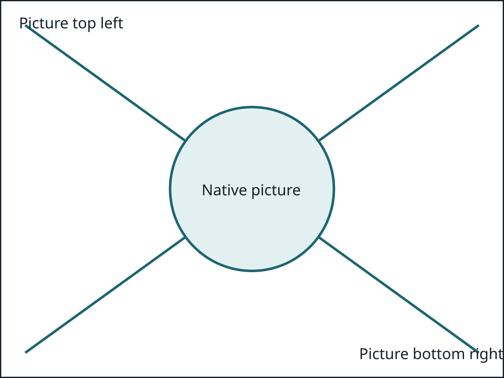

Compare wide and narrow diagrams, scroll to each end, then open inspection and resize.
The first and last nodes and their connecting arrows must remain reachable.
A small diagram stays centered and does not require horizontal scrolling.

This heading and paragraph must stay in the document while the sidebar is open.
Source explanations keep the same reading measure as the surrounding prose. The commands and table can use the wider canvas without widening this paragraph.
| Command | Result |
|---|---|
| embed | A portable reader |
Nested disclosures retain the document's reading measure too.
Comparison columns own their local layout.
Do not force a reading width into these columns.